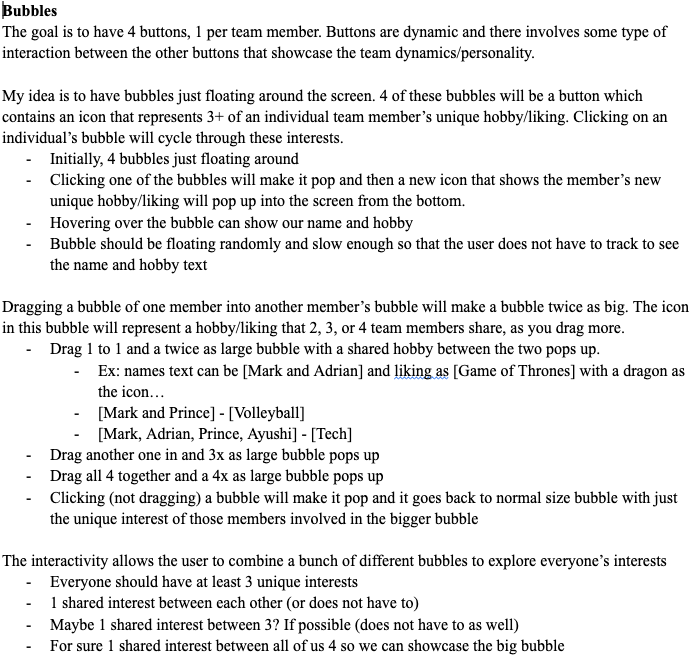

Brainstorming
Our initial brainstorming session was in the first tutorial. We discussed how we can relate each button to a specific aspect of a team member's personality and the first idea was to have a button that represents our favorite hobbies. Further discussion led to multiple ideas that we liked and could possible expand on. Ultimately, we decided arrived at and decided to adopt the Bubble concept.
The Bubble concept involves 4 separate bubbles that represent different traits/hobbies of a team member and when dragged into other bubbles, they combine to form a new combined representation of the member's shared personalities.
My greatest contribution was the brainstorming of this idea and the presentation of it to my group as something simple to implement and effective to convey what the assignment is trying to achieve.

Sketches
After brainstorming and developing the initial concept in my head, I created some sketches that visually represent the idea.
1 / 4
Prototype
Below is a simple HTML prototype of the Bubble concept I pieced together as a visual for how the idea will work in practice and comes together in my head. The bubbles were quickly drawn by me and the animations piece together from separate sketches and transformations.
Drag the numbered bubbles together to combine them! Double click to pop them!
The Final Product
The final product is a fully functional web application that brings the Bubble concept to life, partly similar to the prototype but with a polished and user friendly look and feel. My group members finished the final product and with some input, we decided to keep the bubbles simple and the actions of combining and popping them as simple actions as well. In this version, popping simply changes the trait shown on the bubble.
One interesting aspect is how the bubbles move. Depending on the ITP results of a member, the bubbles may move faster or slower based on introvertedness or change directions faster based on how actionable a member is. This idea, combined with other dynamic cue aspects like a noise on pop or combination and bubble size changing on pop gives the application a dynamic and lively feel that makes the interaction fun.
The group has also decided to include a simple combination of the group's ITP results in the final web app to showcase traits where we are similar and different from each other.